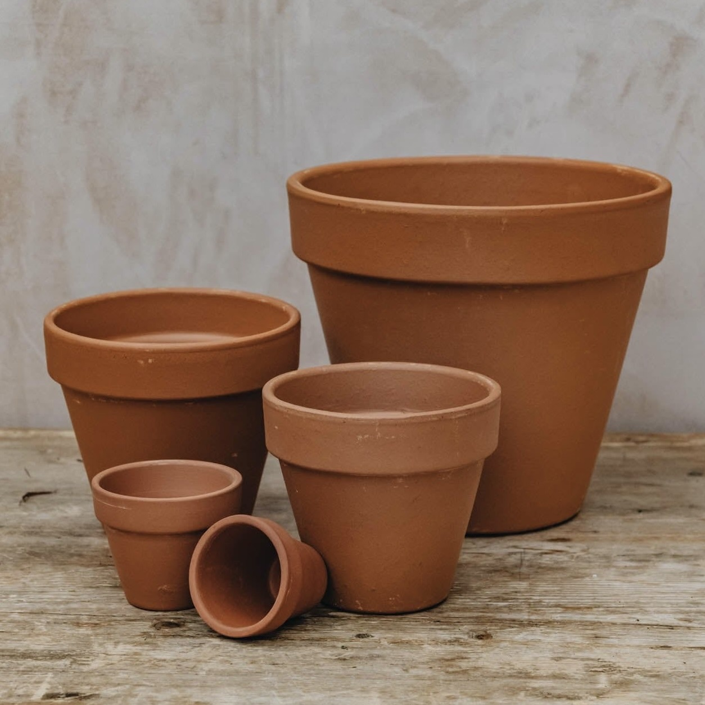
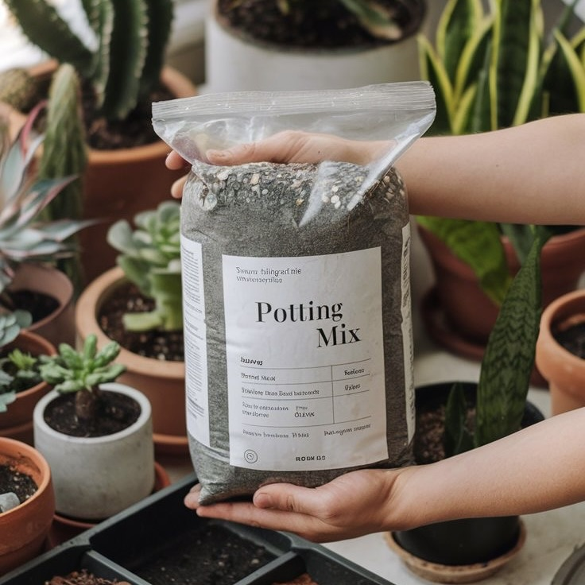
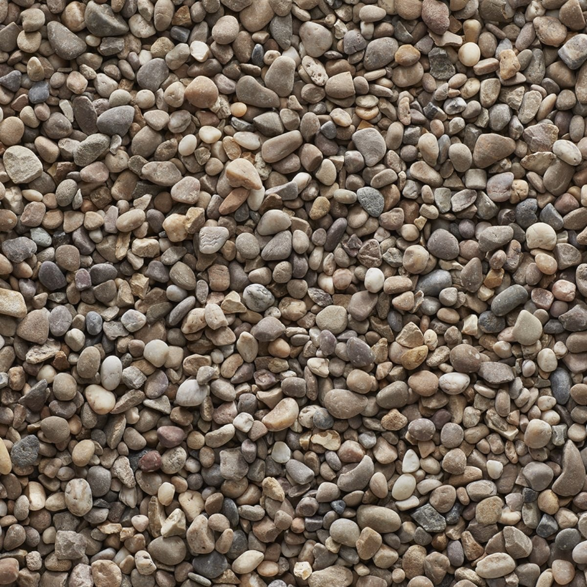
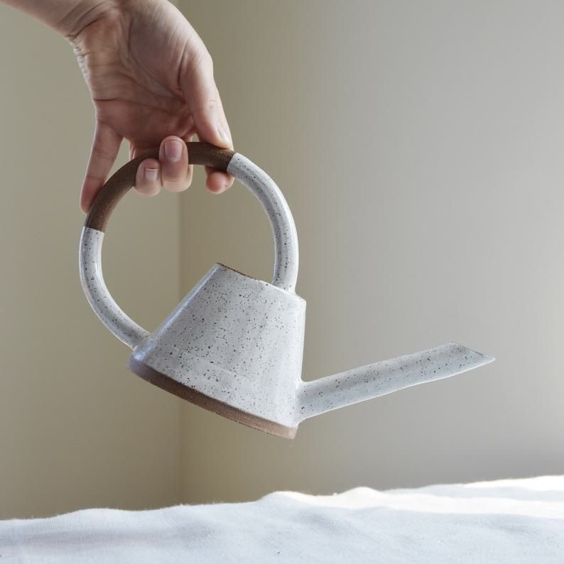
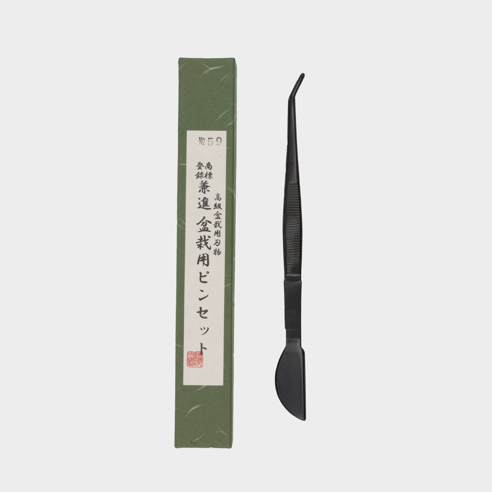
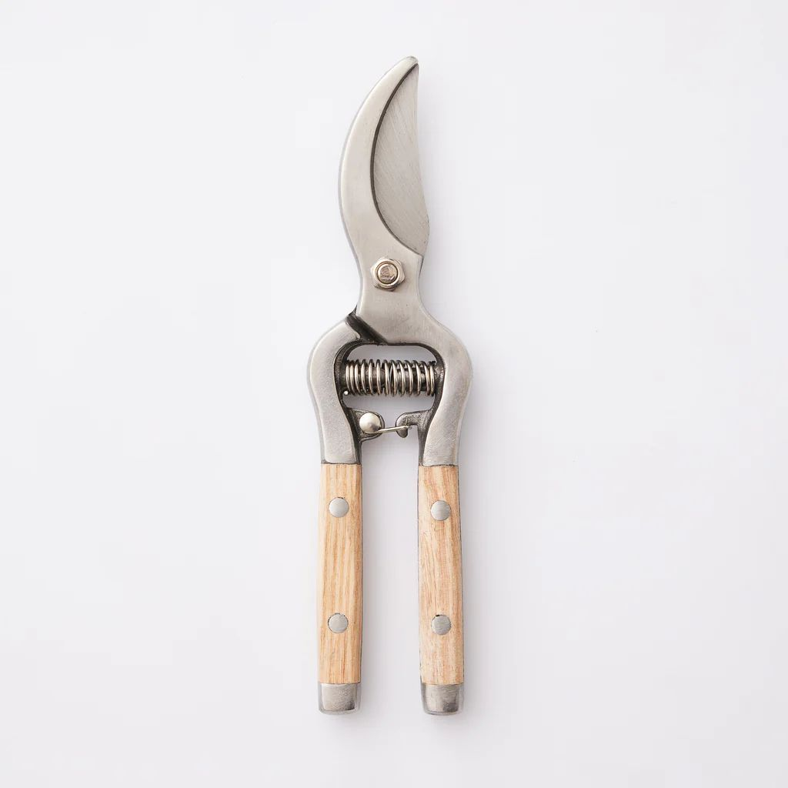
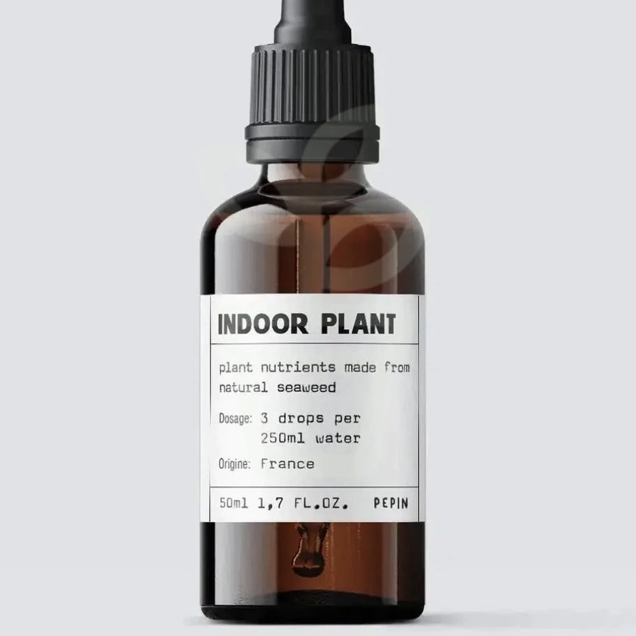
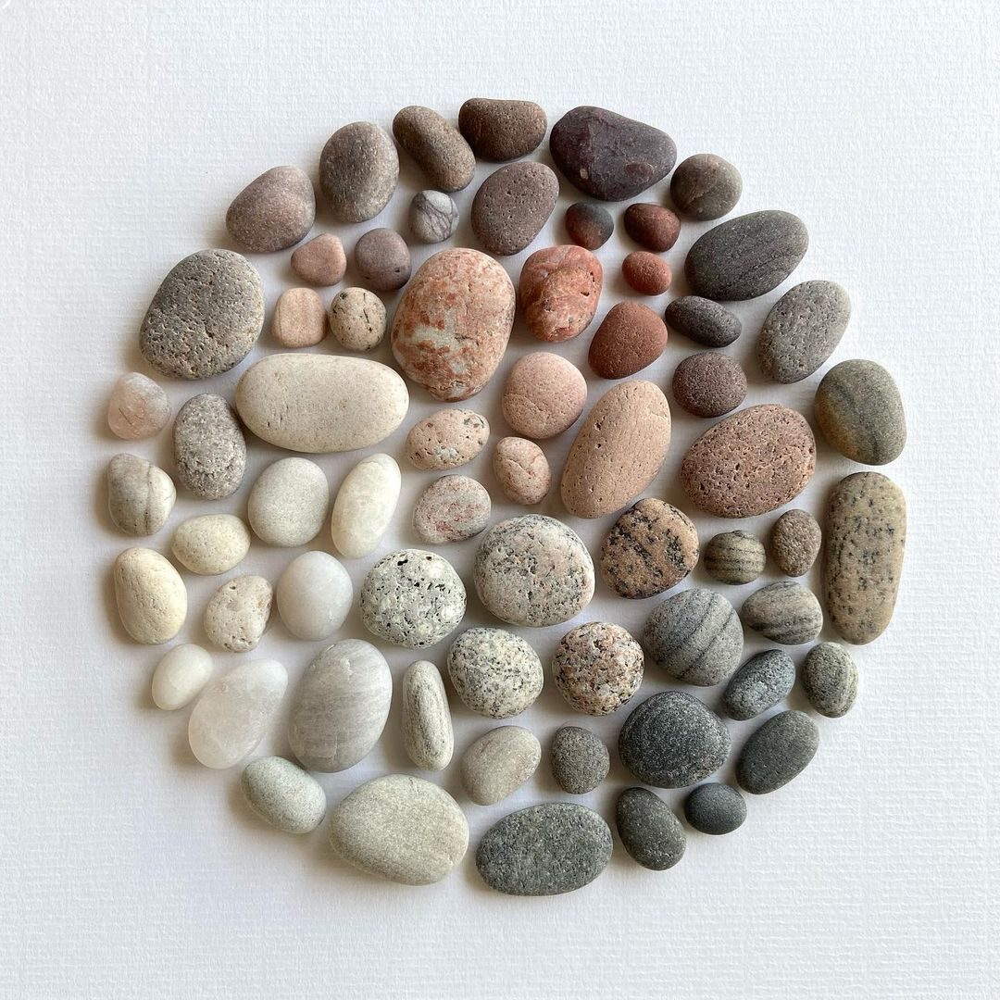
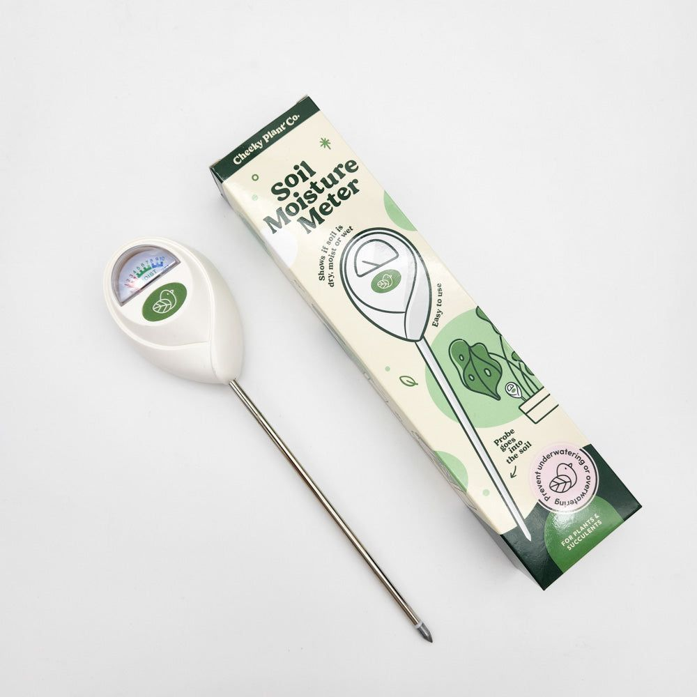

Artisan Terracotta
RM 25.00
Premium soils, breathable terracotta, and precision tools. Everything you need to repot, prune, and maintain your desert gems with professional care.

RM 25.00

RM 18.00

RM 15.00

RM 45.00

RM 12.00

RM 35.00

RM 22.00

RM 10.00

RM 30.00
Having the correct tools and soil components is half the battle when caring for xerophytic plants. The wrong pot or a heavily peated soil mix can retain moisture for far too long, leading to irreversible root rot. We highly advocate for using unglazed terracotta and gritty inorganic mixes to ensure your plants thrive.
Professional precision tools are not just for aesthetics; they serve vital functions. Long tweezers protect your hands from fine glochids and allow you to remove dead leaves securely without disturbing the root system. Clean, sharp shears prevent crushing stems when propagating, minimizing the risk of bacterial infections spreading.